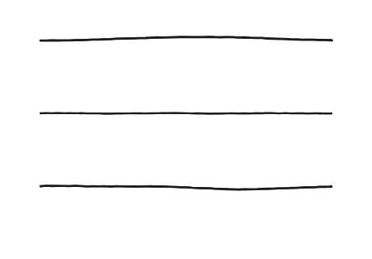
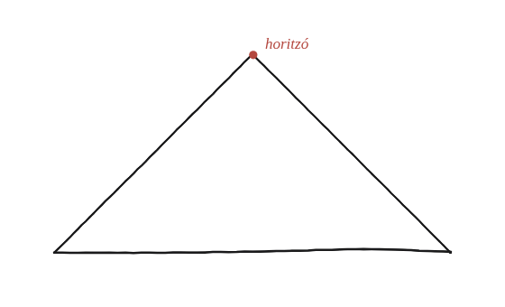
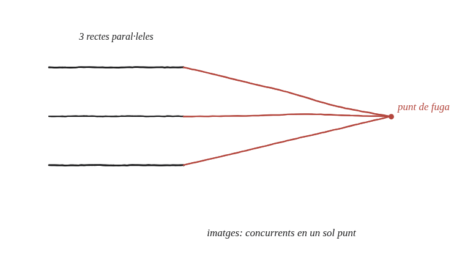

Quin aspecte té la projecció de tres línies paral·leles?

Què hem de produir
Una descripció qualitativa concreta: tres rectes que, un cop projectades, ja no són paral·leles entre si, sinó que tenen alguna altra relació geomètrica exacta —quina?
Pensa en les vies del tren
Imagina't dret entre dues vies de tren paral·leles, mirant cap on s'allunyen. Encara que són paral·leles de veritat, com les veus a l'horitzó?

La construcció

Tancar-ho
Tres rectes paral·leles, en ser projectades des d'un punt fix, es converteixen en tres rectes concurrents —totes es tallen en un mateix punt. Aquest punt és exactament la imatge del "punt a l'infinit" comú a totes tres (la seva direcció comuna), pel mateix mecanisme que ja s'ha vist en projectar un polígon: la direcció compartida es projecta a un únic punt ordinari, anomenat punt de fuga.
Tres rectes paral·leles es projecten sempre com a tres rectes concurrents —que es tallen en un sol punt, el punt de fuga, que és la imatge del punt a l'infinit de la seva direcció comuna.
Comprovació
Tres rectes horitzontals paral·leles, projectades des d'un punt per sobre seu cap a un pla inclinat: numèricament, les tres imatges, prolongades, es tallen totes en el mateix punt —no en tres punts diferents.
Aquest és, literalment, el punt de fuga de la pintura en perspectiva: qualsevol conjunt de rectes paral·leles del món real convergeix, en un dibuix o fotografia, cap a un únic punt. La geometria projectiva no en fa cap excepció: n'és la manera formal de dir-ho.